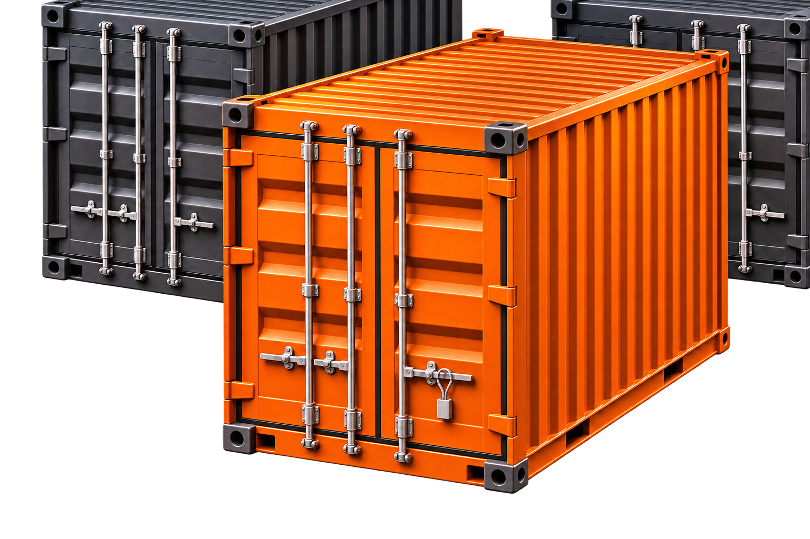
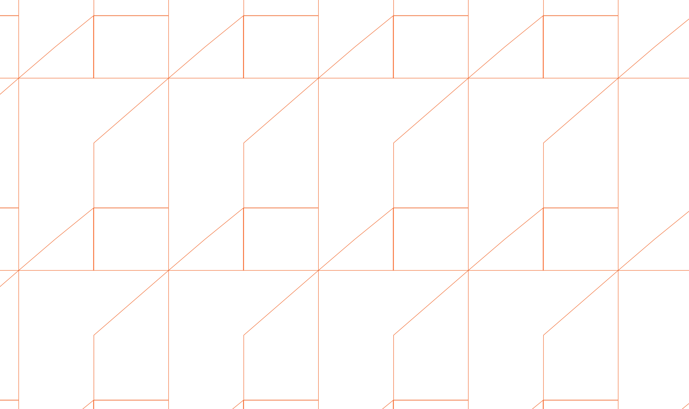
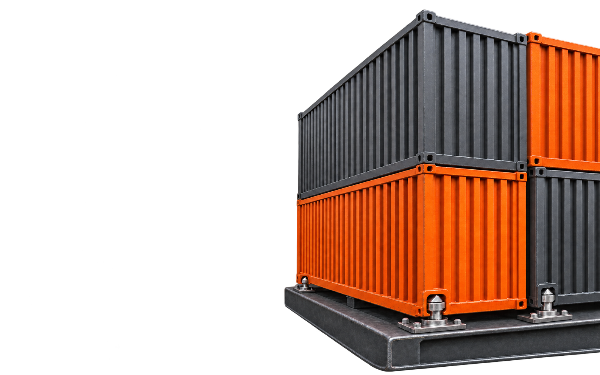

Strategic Sourcing
Turn business requirements into a clear, coordinated sourcing process.
We bring buyers, suppliers, and partners together. Then coordinate the processes that move business forward.
From the first supplier search to the next commercial opportunity, TKML connects the steps that help work progress.
Turn business requirements into a clear, coordinated sourcing process.

Find and assess suppliers against your commercial needs.
Build productive connections between buyers, suppliers, and partners.
Organise offers so they are easier to review and compare.
Develop relationships and opportunities that move business forward.
A straightforward process turns your request into clear commercial next steps.
Share your requirement, specifications, priorities, and timing so we can agree on a clear scope.
Build a clear scope
We identify potential suppliers whose capabilities and offer align with your needs.
Screen potential suppliers
We coordinate quotation requests and clarify details to make offers easier to review.
Illustrative offers
Compare example offers
We help keep communication, commercial discussions, and agreed next steps moving.
Move the discussion forward
The Opportunity
You know what your business needs, but finding a supplier who can meet your specifications, budget, and timeline takes work. Quotes come back with different terms, delivery dates need confirming, and it can be unclear who owns the next step.
TKML helps you define the requirement, find suitable suppliers and partners, compare offers, and coordinate follow-up with the parties involved. That gives you a clearer basis for deciding who to work with and what needs to happen next.
See how we workFrom your first requirement to organized quotations, see how TKML coordinates the next steps.
You share a request. TKML screens potential suppliers, coordinates quotations, and sends the organized offers back to you.
Whether you have a purchase to coordinate or a new market to explore, TKML helps you find the right people and agree on the next steps.
About tkml
Based in Tripoli, Libya, TKML Systems helps businesses source suppliers, coordinate purchases, and develop commercial partnerships. Our team brings more than 70 years of combined experience across commercial operations, sourcing, business development, and technical fields.
Before a transaction moves forward, we clarify what each party needs to deliver, verify supplier and product sources, and make commercial terms clear. We document who is responsible for each step, disclose any commissions or conflicts of interest, and protect confidential information.
Didn’t find your answer? Contact us
We help businesses find suppliers, coordinate requests for quotation, compare offers, and develop commercial partnerships. We can support a specific purchase, help a manufacturer connect with potential buyers, or identify partners for a new market or project.
TKML acts as a commercial intermediary. We connect buyers with suppliers and help coordinate the transaction. The parties’ roles, responsibilities, and commercial terms are clarified before proceeding.
Yes. We can review the offer against your requirements, clarify details such as lead times and delivery terms, and help you compare it with other options if needed. We can also coordinate follow-up with your existing supplier.
Depending on the assignment, we review supplier information, available documentation, and details about where the product comes from. We flag gaps or inconsistencies that need clarification before you decide how to proceed.
Yes. We can identify potential buyers, distributors, or other commercial partners based on your offering and target market. We help make introductions and coordinate initial discussions.
Depending on the agreed scope, we can follow up on outstanding documents, confirm who is responsible for each action, and coordinate communication about agreed milestones and delivery arrangements.
Commercial terms depend on the scope of the assignment and TKML’s role. We explain the applicable fees or commissions before you agree to proceed.
Tell us what you’re looking for and when you need it. For a purchase, share any specifications, quantities, delivery location, and budget range you have. For a partnership, describe your offering, target market, and the kind of partner you’re looking for.

Tell us what you need, what matters most, and when you need it. We’ll review the details with you and agree on the next step.
Request Sourcing